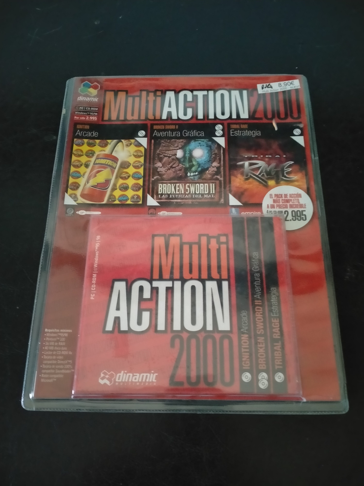

Ficha #000000
MultiAction 2000
MultiAction 2000 es un recopilatorio para PC publicado por Dinamic Multimedia que reúne tres propuestas muy distintas dentro del catálogo de juegos de finales de los noventa: Ignition, un arcade de carreras con vehículos en miniatura y enfoque rápido; Broken Sword II: Las Fuerzas del Mal, una aventura gráfica point and click desarrollada por Revolution Software y continuadora de una de las sagas europeas más importantes del género; y Tribal Rage, un título de estrategia en tiempo real ambientado en un futuro postapocalíptico. Esta edición española en Jewel Case resulta representativa de los packs económicos de PC distribuidos en España a finales de los años noventa, donde se combinaban licencias internacionales, soporte CD-ROM, compatibilidad Windows 95/98 y una presentación compacta orientada al gran público. Su valor documental reside en preservar no solo los juegos incluidos, sino también una forma muy concreta de distribución física nacional previa a la consolidación definitiva del DVD Case y de las reediciones modernas.
- Formato
- Jewel Case
- Plataforma
- Win95 Win98
- Género
- Arcade Carreras Aventura gráfica Point and click Estrategia en tiempo real
- Serie
- Todos Jewel Case Dinamic multimedia
- Desarrollador
- Unique Development Studios, Revolution Software, Disintegrator
- Distribuidor
- Dinamic Multimedia, Virgin Interactive, Empire Interactive
- EAN
- —
Contenido de la edición
- CD-ROM
- caja Jewel Case
- carátula
- funda plástica exterior
Preservación
- Protección
- No determinado
- Formato recomendado
- BIN/CUE
- Jugable en virtualización
- Sí
Preservación recomendada mediante imagen completa del CD-ROM en formato BIN/CUE. Al tratarse de un recopilatorio con varios juegos y ejecutables, conviene verificar individualmente Ignition, Broken Sword II: Las Fuerzas del Mal y Tribal Rage para documentar si alguno requiere comprobación del disco durante instalación o ejecución. No se identifica evidencia suficiente de una protección comercial concreta como SafeDisc, SecuROM, LaserLock o CD-Cops en esta edición específica, por lo que la catalogación prudente queda como no determinada hasta realizar comprobación técnica del soporte.